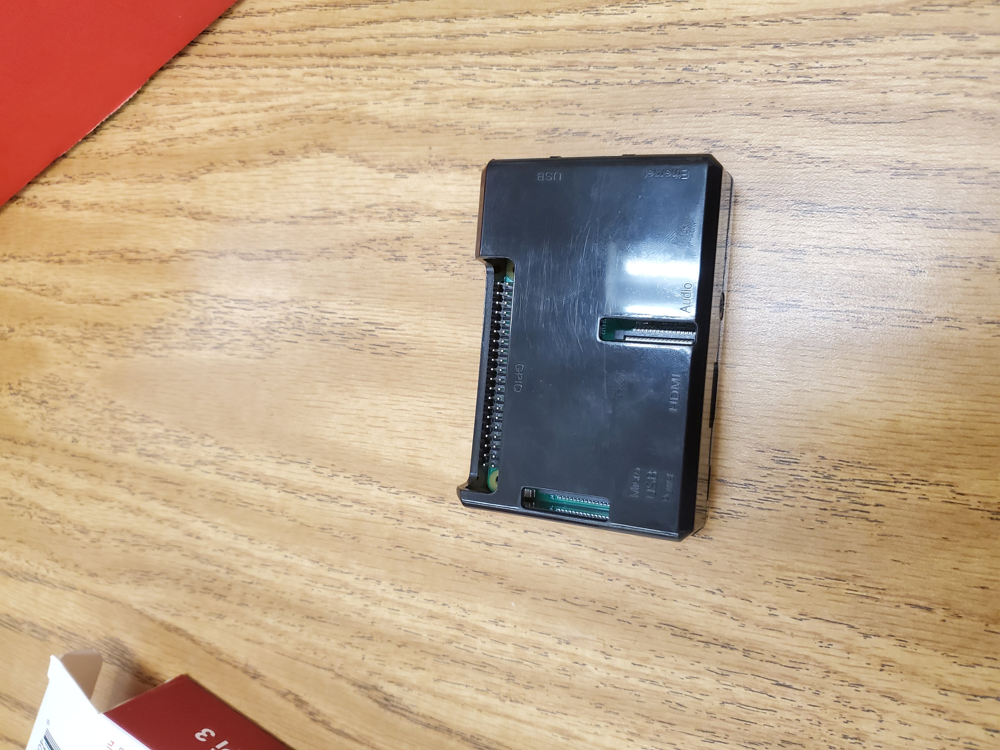

#this whole srcipt only can be run as a function
import time
import board
import busio
import adafruit_si7021
import RPi.GPIO as GPIO
import gspread
import datetime
from oauth2client.service_account import ServiceAccountCredentials
scope = ['https://spreadsheets.google.com/feeds',
'https://www.googleapis.com/auth/drive']
credentials = ServiceAccountCredentials.from_json_keyfile_name('spreadsheets-4bd3d449e5d1.json', scope)
gc = gspread.authorize(credentials)
wks = gc.open("spreadsheet1").sheet1
print('access to google spread sheet')
#Script for Temperature/Humidity sensing
#Create library object using our Bus I2C port
i2c = busio.I2C(board.SCL, board.SDA)
sensor = adafruit_si7021.SI7021(busio.I2C(board.SCL, board.SDA))
reading = 0
#GPIO.setmode(GPIO.BOARD)
#define the pin that goes to the light sensor circuit
pin_to_circuit = 4
def rc_time(pin_to_circuit):
count = 0
#Output on the pin for
GPIO.setup(pin_to_circuit, GPIO.OUT)
GPIO.output(pin_to_circuit, GPIO.LOW)
time.sleep(0.1)
#Change the pin back to input
GPIO.setup(pin_to_circuit, GPIO.IN)
#Count until the pin goes high
while (GPIO.input(pin_to_circuit) == GPIO.LOW):
count += 1
return count
# number count in each function
start_from = int(input('start from:'))
data_pr_sec = int(input('data per second:'))
count1 = start_from
count2 = 0
count3 = start_from
count4 = start_from
count5 = start_from
count6 = start_from
def countrow1():
global count1
count1 += 1
return count1
def countrow2():
global count3
count3 += 1
return count3
def countrow3():
global count4
count4 += 1
return count4
def countrow4():
global count5
count5 += 1
return count5
def countrow5():
global count6
count6 += 1
return count6
def countcolumn():
global count2
count2 +=1
return count2
print("Reading Temperature(°C) Humidity(%) Light(rc_time)")
try:
while True:
reading_str = str(reading)
print("%d %f %f %d %s" % (reading, sensor.temperature, sensor.relative_humidity, rc_time(pin_to_circuit), datetime.datetime.now().isoformat()))
time.sleep(data_pr_sec)
reading += 1
row5 = countrow5()
col5 = 1
wks.update_cell(row5, col5, reading)
row1 = countrow1()
col1 = 2
temperature_value = sensor.temperature
wks.update_cell(row1, col1, temperature_value)
row2 = countrow2()
col2 = 3
wks.update_cell(row2, col2, sensor.relative_humidity)
row3 = countrow3()
col3 = 4
wks.update_cell(row3, col3, rc_time(pin_to_circuit))
row4 = countrow4()
col4 = 5
wks.update_cell(row4, col4, datetime.datetime.now().isoformat())
#insert data from here to google spreadsheet
#Script for Light sensing
#Catch when script is interupted, cleanup correctly
except Exception:
print(countrow1()-1)
finally:
GPIO.cleanup()